debtree
Dieser Artikel wurde für die folgenden Ubuntu-Versionen getestet:
Ubuntu 14.04 Trusty Tahr
Zum Verständnis dieses Artikels sind folgende Seiten hilfreich:
Mit Hilfe des Perl-Skripts debtree  lassen sich Paketbeziehungen grafisch darstellen. Dabei werden nicht nur die direkten Abhängigkeiten eines Paketes berücksichtigt, sondern auch die Abhängigkeiten der direkt abhängigen Pakete. Somit lassen sich Fragen wie „Welche weiteren Pakete sind betroffen, wenn ich Paket xy installiere?“ oder „Welche Systempakete benötigt das Programm xy?” beantworten. Die Ausgabe erfolgt im dot-Format und lässt sich mit Hilfe des Programms
lassen sich Paketbeziehungen grafisch darstellen. Dabei werden nicht nur die direkten Abhängigkeiten eines Paketes berücksichtigt, sondern auch die Abhängigkeiten der direkt abhängigen Pakete. Somit lassen sich Fragen wie „Welche weiteren Pakete sind betroffen, wenn ich Paket xy installiere?“ oder „Welche Systempakete benötigt das Programm xy?” beantworten. Die Ausgabe erfolgt im dot-Format und lässt sich mit Hilfe des Programms dot aus dem Paket Graphviz in eine Grafik wandeln.
Unterstützt werden reguläre (Vorwärts-)Abhängigkeiten, Rückwärtsabhängigkeiten, installierte und/oder virtuelle Pakete, Alternativen und vieles mehr.
Ähnliche Programme sind apt-cache -d und apt-rdepends, welche aber nicht so viele Möglichkeiten bieten wie debtree. Mittels aptitude why PAKET1 PAKET2 lassen sich Paketbeziehungen im Terminal ausgeben.
| 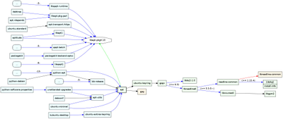 |
| Pakete die von apt abhängen und Pakete, die apt empfiehlt. |
Installation¶
Das Skript ist in den Quellen vorhanden und lässt sich einfach installieren [1]:
debtree (universe)
 mit apturl
mit apturl
Paketliste zum Kopieren:
sudo apt-get install debtree
sudo aptitude install debtree
Benutzung¶
Es empfiehlt sich, einen Unterordner anzulegen (Beispielsweise: debtree) und im Terminal dorthin zu wechseln. Somit werden alle erzeugten Dateien in diesem Ordner abgelegt.
Der Aufruf von debtree erfolgt immer in einem Terminal [2]. Da der einfache Texteditor Nano auf jedem installierten System vorhanden ist, bietet sich das Paket nano für ein erstes Beispielbild an:
debtree --with-suggests nano > nano.dot
Durch die Option --with-suggests werden auch alle vorgeschlagenen Pakete berücksichtigt. Nach den Optionen folgt der Paketname. Mit Hilfe der Umleitung (">") wird die Ausgabe in die Datei nano.dot geschrieben. Im nächsten Schritt wird diese Datei in eine Grafik verwandelt:
dot -Tpng nano.dot -o nano.png
Mehr zum Befehl dot findet man im Artikel Graphviz. Das soeben erstellte Bild kann mit jedem Bildbetrachtungsprogramm geöffnet werden.
Hinweis:
Paketbeziehungen, insbesondere von grafischen Programmen, können sehr umfangreich sein, was in der Regel zu einem unüberschaubaren und mehrere MB großen Bild führt (die Berechnung dauert dann ebenso lange). Siehe dazu: Grafik wird zu groß
Grafik lesen¶
| 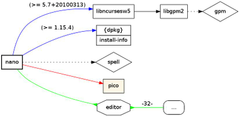 |
| Paketbeziehungen von nano |
Die resultierende Grafik enthält verschiedene Kästen und Pfeile. Kästen stellen Pakete dar, Pfeile zeigen die Beziehung zwischen ihnen auf.
Bedeutung der Kästen:
Rechteckig fett: Das Paket, deren Abhängigkeiten man untersuchen möchte.
Rechteckig: Normale Pakete.
Rechtecke direkt untereinander: Alternative Pakete, die die gleiche Funktionalität bieten.
Raute: Paket, deren weitere Abhängigkeiten nicht weiter verfolgt werden. Siehe Datei endlist und die Option
--max-depth=ZAHLim Abschnitt KommandozeileAchteckig: Virtuelles Paket

| Bedeutung der Pfeile | |||
| Bildteil | Farbe/Form | Bedeutung | Erläuterung |
| 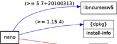 | Blau | Abängig von (depends) | nano ist direkt abhängig von den Paketen libncursesw5, dpkg und install-info. Letztere stellen Alternativen dar, sowohl die eine als auch die andere Abhängigkeit würde reichen. Die Zahlen über den Pfeilen sind die Versionsangaben. |
| 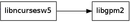 | Schwarz | Empfiehlt (recommends) | libcursesw5 empfiehlt das Paket libgpm2. |
| 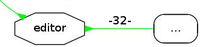 | Grün (Pfeil rückwärts) | Stellt zur Verfügung (provides) | Das virtuelle Paket editor stellt nano zur Verfügung. editor stellt noch weitere 32 Editoren zur Verfügung. |
| 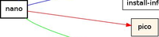 | Rot | Konflikte | nano würde nicht funktionieren, wenn das Paket pico installiert wäre. Der rötliche Hintergrund von pico zeigt an, das das Paket unbekannt ist (es existiert nicht in der Paketverwaltung). Warum es Konflikte gibt, kann man in den Debian FAQs nachlesen. |
| 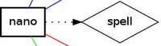 | schwarz, gepunktet | Schlägt vor (suggests) | nano schlägt das Paket spell vor. |
Neben diesen Pfeilarten gibt es noch besondere Formen für:
Vor-Abhängig (pre-depends): Purpurne Pfeile, fett. Vor-abhängige Pakete müssen vor der Installation eines anderen Paketes komplett (inklusive Konfiguration) installiert sein. Normale Abhängigkeiten müssen nicht inklusive Konfiguration installiert sein. Siehe auch dasDebian Anwenderhandbuch
Abhängigkeiten um Pakete aus dem Quellcode zu erstellen (build-depends): Gelb/Goldfarben.
Grafik wird zu gro߶
Die Darstellung von Paketbeziehungen kann sehr umfangreich werden. In diesem Anhang wurden die Beziehungen vom Paket konsole, dem Terminal von KDE, berechnet: konsole_full.svg (svg-Datei, ca 480 KiB). Das gleiche Bild im Format jpg kommt auf eine Dateigröße von ca 7,7 MiB. debtree bietet deshalb verschiedene Möglichkeiten, die Ausgabe der Grafik auf ein überschaubares Maß zu kürzen.
Kommandozeile: Beschränkung von empfohlenen, vorgeschlagenen oder alternativen Paketen
Kommandozeile¶
| Befehlszeilenoptionen | ||
| Option | Auswirkung | Bild |
| debtree --no-versions nano | --no-versions unterdrückt die Versionsangaben | 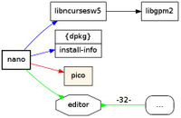 |
| debtree --no-versions --no-recommends nano | Schaltet die Anzeige empfohlener Pakete ab (schwarze Pfeile). | 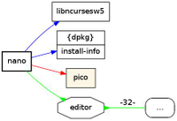 |
| debtree --no-versions --no-alternatives nano | Zeigt nur die ersten Abhängigkeiten von Alternativen an. | 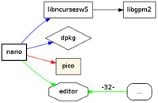 |
| debtree --no-versions --no-provides nano | Zeigt keine virtuellen Pakete an, die vom angegebenen Paket bereitgestellt werden (grüne Pfeile). | 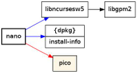 |
| debtree --no-versions --no-conflicts nano | Die Anzeige von Konflikten wird unterdrückt (rote Pfeile). | 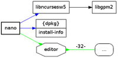 |
| debtree --no-versions --max-depth=2 konsole | Abhängigkeiten von konsole (dem KDE-Terminal). Es werden nur die angegebenen Anzahl Abhängigkeiten berücksichtigt. Zum Vergleich siehe den Anhang konsole_full.svg. | 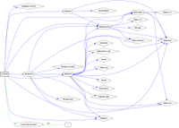 |
Weitere Optionen können der Manpage von debtree entnommen werden.
Konfigurationsdateien¶
debtree bringt zwei Konfigurationsdateien mit, die erheblichen Einfluss auf die ausgegebenen Elemente haben. Um Paketbeziehungen bei grafischen Programmen auf eine vernünftige Größe zu bringen, sollte man in seinem Homeverzeichnis den Ordner .debtree erstellen und die zwei Originaldateien aus dem Verzeichnis /etc/debtree/ dorthin kopieren.
Datei endlist¶
debtree beendet die Suche nach Abhängigkeiten, wenn es auf ein Paket trifft, dessen Name in dieser Datei steht. Damit lässt sich die Größe der Grafik erheblich einschränken. Neue Einträge können einfach hinzugefügt werden:
# Eigene Einträge libqmmp-misc #Erweiterungen vom mediaplayer qmmp
Das Zeichen # ist ein Kommentarzeichen. Alles was dahinter steht, wird von debtree nicht berücksichtigt.
Datei skiplist¶
Die in dieser Datei enthaltenen Paketnamen und deren Abhängigkeiten werden von debtree komplett ausgelassen. Neue Einträge können einfach hinzugefügt werden (Beispiel):
#Eigene Einträge libkio5 #file-management libknotifyconfig4 #KDE Notifications
Rückwärtige Abhängigkeiten¶
| 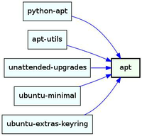 | 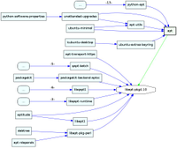 |
debtree --rdeps-depth=1 --no-recommends --no-provides -I apt | debtree --rdeps-depth=2 --max-rdeps=2 --no-recommends -I apt |
debtree gibt grundsätzlich die Pakete aus, die das angegebene Paket selber benötigt (und deren Abhängigkeiten). Zusätzlich ist es auch möglich, die Pakete ausgeben zu lassen, die selbst das angegebene Paket als Abhängigkeit führen.
Die Bilder zeigen die Auswirkungen der hier beschriebenen Optionen. Die Optionen --no-recommends, --no-provides und -I wurden nur verwendet, um die Bilder für diesen Artikel zu optimieren.
| Optionen für rückwärtige Abhängigkeiten | |
| Option | Beschreibung |
--rdeps-depth=ZAHL | debtree geht ZAHL Ebenen von Abhängigkeiten zurück, Standardwert: 0 = keine rückwärtigen Abhängigkeiten |
--max-rdeps=ZAHL | Falls mehr als ZAHL Pakete abhängen, wird nur noch die Anzahl der Pakete ausgegeben. Standardwert: 5 |
Tipps¶
Die beiden Befehle zum Erstellen der .dot-Datei und der Grafik lassen sich auch verketten:
debtree debtree | dot -Tpng -o debtree.png
Diese Verkettung ist zwar praktisch, kann aber zu unerwünschten, sehr großen Grafiken führen. Falls sich bei der Verkettung im Terminal augenscheinlich nichts mehr rührt, kann man davon ausgehen, dass die Grafik sehr groß wird. Ein Abbrechen des Vorgangs per
Strg +
C ist nicht möglich! Für eigene Tests ist der Umweg über die .dot-Datei und Kontrolle der Zeilenanzahl mittels wc sicherer:
wc- l DATEINAME.dot
Werden mehr als 100 Zeilen ausgegeben, kann man davon ausgehen, das die Grafik sehr groß und unübersichtlich wird. Alternativ bietet sich folgende Verkettung an:
debtree PAKETNAME | wc -l
Links¶
Paketverwaltung
 Übersicht zum Thema
Übersicht zum Thema
Projektseite
- Erklärung mit weiteren BeispielenBlog des Autors
- Vorstellung und weitere Beispiele im Blog des Autors
Projekt im gemeinschaftlichen Debian Git-Repository
- Entwicklung des Projektes und SnapshotsDebian FAQ
- DEB-Pakete, Grundlagen über Aufbau, Wesen und Begriffe
- Erstellt mit Inyoka
-
 2004 – 2017 ubuntuusers.de • Einige Rechte vorbehalten
2004 – 2017 ubuntuusers.de • Einige Rechte vorbehalten
Lizenz • Kontakt • Datenschutz • Impressum • Serverstatus -
Serverhousing gespendet von